할머니의 레시피
성수역 · 한식
정갈한 한식 메뉴와 따뜻한 분위기로 사랑받는 한식 맛집입니다.
성수역 · 한식
정갈한 한식 메뉴와 따뜻한 분위기로 사랑받는 한식 맛집입니다.

성수역 · 한식
쫄깃한 식감과 풍부한 맛으로 유명한 성수동 대표 족발 맛집입니다.

성수역 · 일식
두툼한 돈카츠와 바삭한 튀김이 특징인 일본식 돈카츠 전문점입니다.
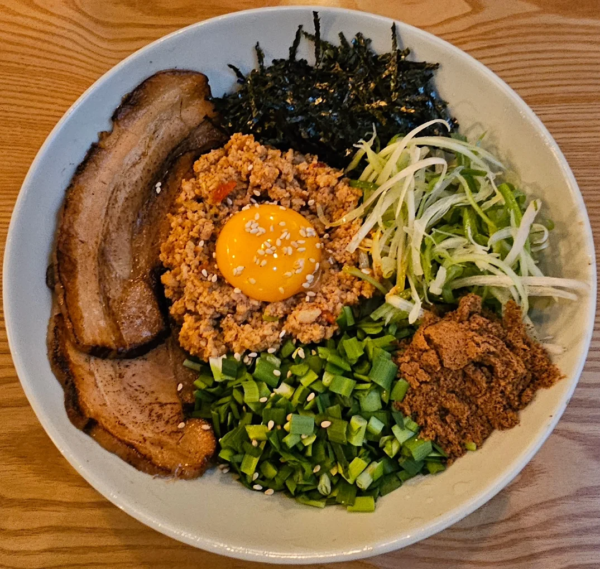
성수역 · 일식
진한 육수와 쫄깃한 면발을 즐길 수 있는 일본식 라멘 전문점입니다.

성수역 · 방탈출
다양한 테마와 몰입감 있는 구성을 제공하는 방탈출 카페입니다.
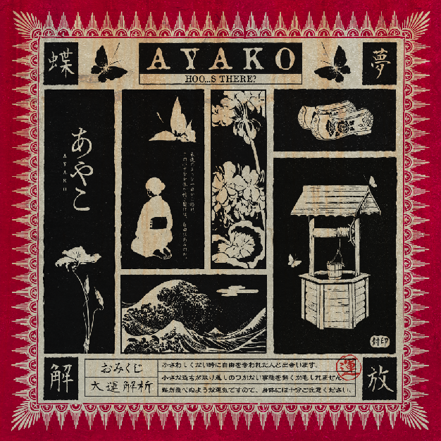
성수역 · 방탈출
탄탄한 스토리와 퀄리티 높은 문제 구성이 특징인 방탈출 공간입니다.
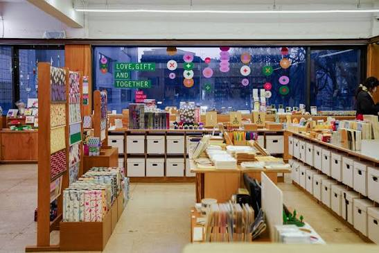
성수역 · 소품샵
감각적인 디자인 소품과 문구류를 만날 수 있는 인기 편집샵입니다.
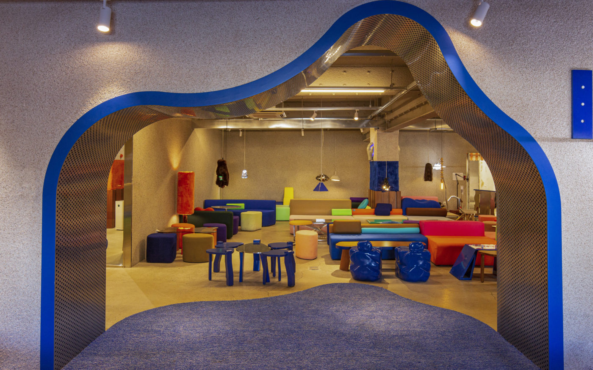
성수역 · 소품샵
개성 있는 굿즈와 라이프스타일 제품을 구경할 수 있는 소품샵입니다.
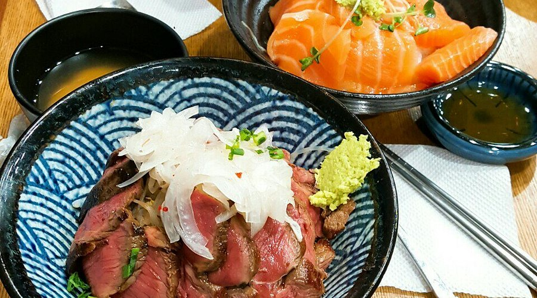
홍대입구역 · 한식
푸짐한 덮밥과 깔끔한 한식 메뉴를 즐길 수 있는 인기 맛집입니다.
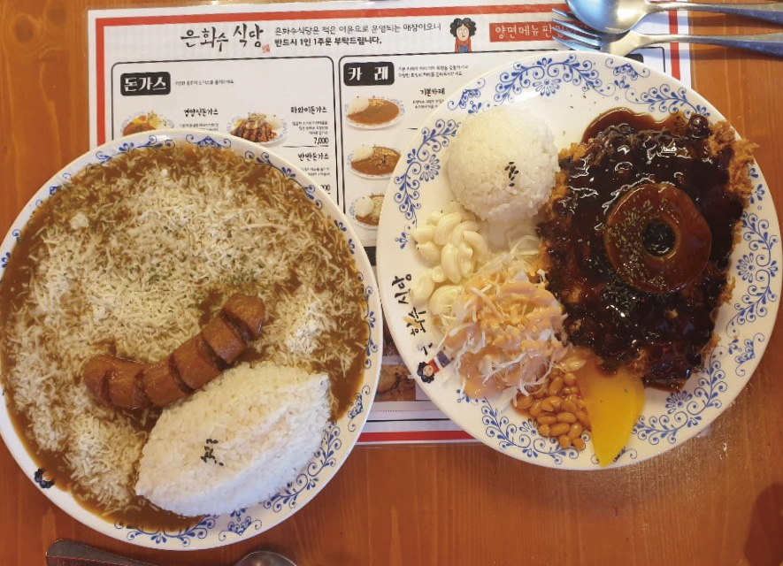
홍대입구역 · 한식
돈카츠와 정식 메뉴를 합리적인 가격에 즐길 수 있는 식당입니다.
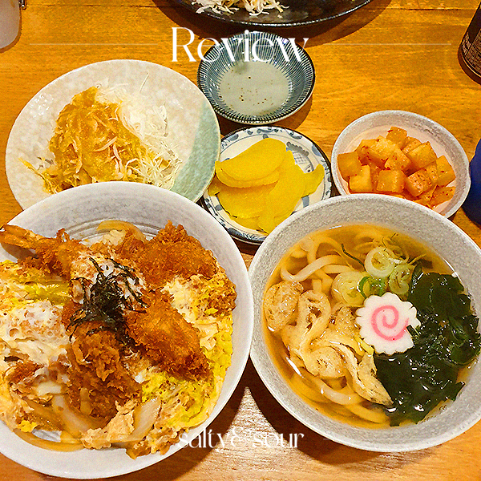
홍대입구역 · 일식
일본 가정식과 돈카츠 메뉴를 편하게 즐길 수 있는 일식 맛집입니다.
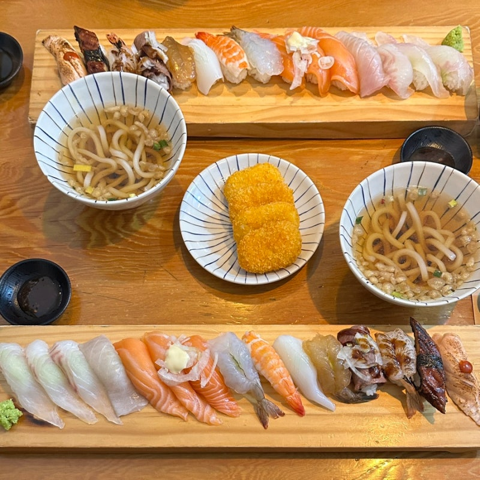
홍대입구역 · 일식
초밥과 사시미 등 다양한 일식 메뉴를 즐길 수 있는 전문점입니다.

홍대입구역 · 방탈출
다양한 테마의 방탈출 게임을 즐길 수 있는 대표적인 체험 공간입니다.
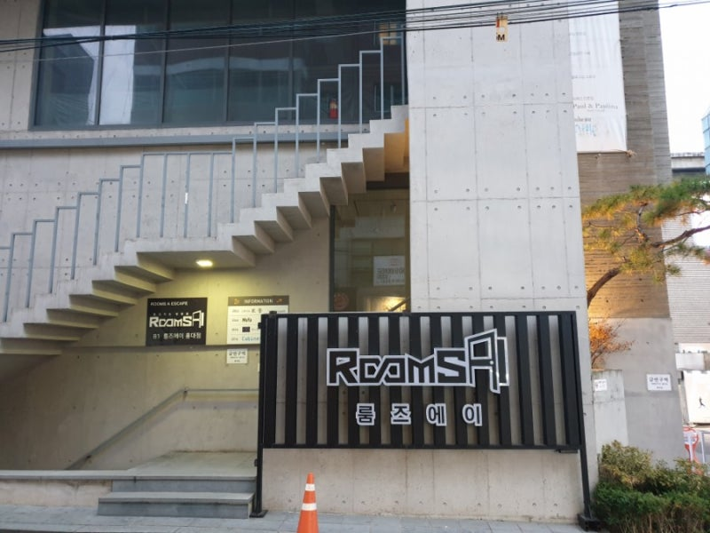
홍대입구역 · 방탈출
몰입감 있는 스토리와 인테리어가 특징인 방탈출 카페입니다.
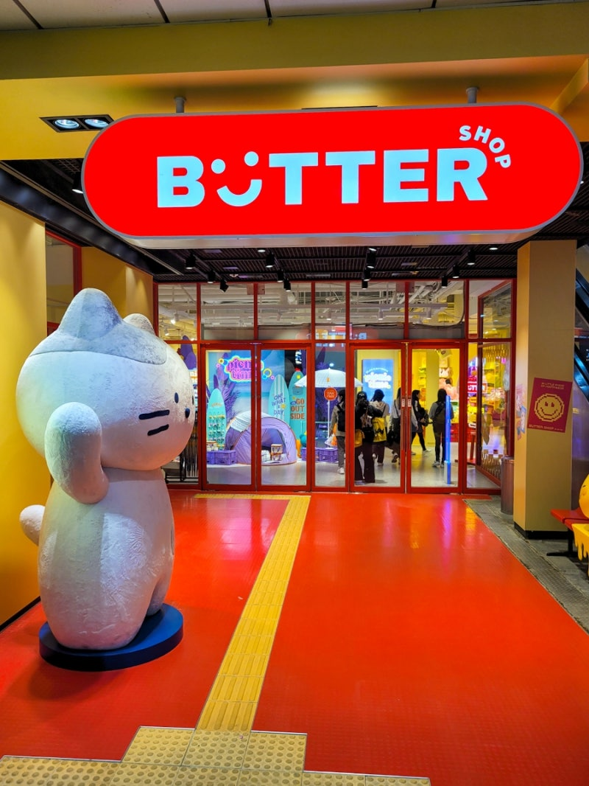
홍대입구역 · 소품샵
아기자기한 문구와 생활 소품을 구경할 수 있는 인기 소품샵입니다.
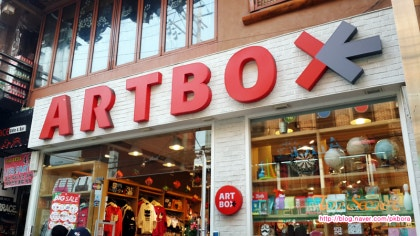
홍대입구역 · 소품샵
다양한 캐릭터 상품과 문구류를 판매하는 대표적인 소품 매장입니다.